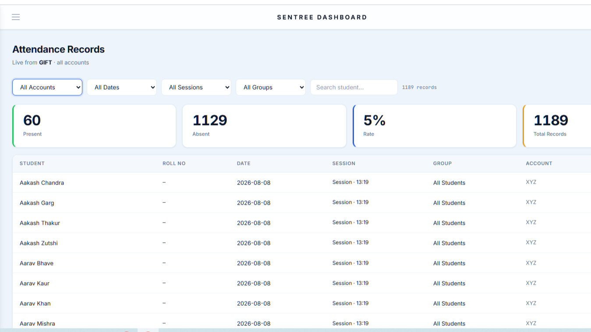

AI Face Recognition
Recognises enrolled students from a live camera feed and marks attendance automatically.
Offline · On-device · Built for schools
SenTree marks attendance with on-device AI face recognition, right inside the classroom. No internet dependency, no queues, no proxy attendance — just a camera and a second.
*Typical on-device recognition time; varies by hardware.

Designed for institutions that take attendance — and student privacy — seriously.
Product overview
SenTree pairs an Android application used in the classroom with a web dashboard used by administrators — working together, or independently, without depending on an internet connection to function.
Installed on a classroom tablet or phone. A teacher opens a group, points the camera, and SenTree recognises each enrolled student in real time — entirely on-device.
Used by admins and teachers to manage students, groups, and records — and to review attendance history, exports, and audit trails from any browser.
Features
Built for the realities of a real school day — spotty connectivity, shared devices, and staff who need things to just work.
Recognises enrolled students from a live camera feed and marks attendance automatically.
Runs entirely on-device, so attendance works even without an internet connection.
Guards against photo and video spoofing attempts to keep attendance records genuine.
Enroll, edit, and organise student profiles with photos used for recognition.
Organise students into classes or sections for faster, structured attendance sessions.
Every session is logged with timestamps, ready to review by student, group, or date.
Export attendance data to Excel in a few clicks for reporting and record-keeping.
Back up student and attendance data locally in a portable, structured format.
A browser-based control centre for administrators to manage the whole institution.
Optionally sync device data to the dashboard once a connection becomes available.
Attendance taken offline is queued locally and synced automatically once online.
Every administrative action is recorded, so changes to records stay traceable.
Teachers get scoped access to take attendance for their own groups only.
Full administrative oversight of users, permissions, groups, and system settings.
Administrators can remotely disable a device's access if it is lost or misused.
Recover student and attendance data from a backup when a device is reset or replaced.
The dashboard reflects newly synced attendance as soon as it's available.
See it in action
A short walkthrough of enrollment, live recognition, and the dashboard.
Gallery
A closer look at enrollment, live recognition, group views, and reporting.



How it works
Your institution's admin account is verified and approved to get started.
Students are enrolled once with a photo, so the app can recognise them going forward.
Students are organised into classes, sections, or batches for structured sessions.
Teachers open a group and let the camera recognise each student — offline, instantly.
Attendance is compiled automatically, ready to export or review whenever needed.
Admins get a full, synced view across every group, class, and device.
FAQ
No. Face recognition and attendance marking run entirely on-device. An internet connection is only used, optionally, to sync data to the web dashboard.
Data is stored locally on the device by default, with JSON backups and optional synchronisation to your institution's dashboard when connected.
SenTree includes anti-spoof detection designed to identify photo and video-based spoofing attempts during recognition.
The SenTree app runs on Android tablets and phones. The dashboard is web-based and works in any modern browser.
Yes. Role-based access means teachers see only their assigned groups, while admins have full oversight and control.
Reach out through the contact section below with your institution's details, and we'll walk you through setup and onboarding.
Legal
How SenTree collects, uses, stores, and protects data — including student facial and attendance information — on behalf of the schools and institutions that deploy it.
This Privacy Policy explains how SenTree (“SenTree,” “the App,” “we,” “us,” or “our”) collects, uses, stores, and protects information when a school, institution, or organization (“Organization”) and its authorized staff (“Teachers,” “HR/Admins,” or “Account Holders”) use SenTree to take facial-recognition-based student attendance.
SenTree is provided as a tool to schools, colleges, training centers, and similar organizations (each, an "Organization"). The Organization — not SenTree's developer — is the primary controller of student data in most cases: it decides to deploy the App, enrolls students, and manages its own Teacher/HR accounts. Our relationship with each Organization, including data-processing responsibilities, is further described in Section 16 ("School/Organization Administrator Responsibilities"). Contact details for privacy inquiries are provided in Section 24.
SenTree is a mobile Android application that allows a Teacher or HR/Admin ("Account Holder") to:
SenTree does not knowingly interact directly with students as end users. Students are the subjects of the data (their faces and attendance records), not users of the App. The Account Holder (Teacher/HR/Admin) is the person who operates the App.
When a Teacher/HR/Admin registers a student in SenTree, the following student information may be collected and stored:
Student information is entered and managed entirely by the Organization's Account Holders. SenTree's developer does not independently collect student information; we receive it only insofar as the Organization's app instance syncs it to our cloud backend, as described in Section 10.
During enrollment: SenTree captures a small number of face photographs (currently up to five) per student through the device camera, either by manual capture or automatic capture when a face is detected. These photographs are used only to generate a facial embedding (Section 5); they are processed on the device.
During attendance sessions: the live camera feed is analyzed frame-by-frame on the device to detect and match faces. Individual attendance frames are not saved to the roster or exported.
What we do not intend to retain long-term: raw enrollment photographs are used transiently to compute an embedding and are not required to be kept afterward, and attendance-session camera frames are not persisted.
Disclosure of current build behavior: as of this policy's drafting, the underlying face-matching component of the App additionally saves a cropped copy of each processed face image to local device storage for debugging purposes, in addition to computing the embedding. Facial images are considered sensitive biometric information and are treated with the protections described throughout this policy.
A facial embedding is a numeric, machine-generated representation (a vector of numbers) derived mathematically from a face photograph. It is not a photograph and cannot, by itself, be viewed as an image — it is used only to computationally compare one face against another (via similarity scoring) to support recognition.
SenTree generates and stores facial embeddings for each enrolled student in order to recognize the student during future attendance sessions, and to improve match confidence by storing multiple embeddings per student (one per enrollment photo).
Facial embeddings are stored locally, in an on-device database, for use during attendance recognition, and in the cloud (Firebase), encoded and synced under the Organization's account, so that a device can be restored if lost or replaced (see Section 10).
Because embeddings are derived from biometric identifiers (faces), many jurisdictions classify them as biometric data or sensitive personal data, subject to heightened legal protections, notice, and consent requirements (see Sections 16 and 19). The Organization is responsible for obtaining any legally required consent — from parents/guardians where the student is a minor, and/or from the student directly where applicable — before enrolling a student's face in SenTree.
SenTree records, for each attendance session: the session date and time label, the group/class name, and each enrolled student's name and present/absent status.
Attendance records are stored locally on the Account Holder's device and are synced to the cloud (see Section 10) so the Organization's attendance history is not lost if a device is lost or reset. Attendance status can be manually corrected by an Account Holder after a session, and such corrections are logged with the account name that made the change.
To use SenTree, an Account Holder (Teacher or HR/Admin) provides: an Organization ID, a username/account name, an account password, and a role (e.g., Teacher, HR/Admin).
This information is used to authenticate the Account Holder, associate their activity and data with their Organization, and (for HR/Admin roles) to approve or reject new account requests within the Organization. Account information, once approved by an Organization Admin, is stored in the cloud backend under that Organization's records and is retained until the account or Organization requests deletion.
SenTree requires access to the device camera to capture enrollment photographs of students, run live facial detection and recognition during attendance sessions, and run an on-device liveness/anti-spoof check (when enabled) to help confirm that a live person, not a photo or screen, is present.
Camera access is used only while the relevant screen (registration or attendance) is open and active. SenTree does not access the camera in the background or without the Account Holder actively using a camera-based feature. Camera permission is requested via the device's standard permission system and can be revoked at any time in device settings (doing so will prevent attendance/registration features from functioning).
To operate reliably and to support the Organization's ability to monitor and manage devices using SenTree, the App collects certain device and technical information, including a device identifier (derived from device hardware information), device model, brand, and manufacturer, Android OS version and SDK level, App version, timestamps of app launches and activity ("pings"), and diagnostic/debug logs generated by the App during operation (see Section 14).
This information is sent to our Firebase backend and is associated with the Account Holder's account and Organization. It is used to operate a remote "kill switch" that allows an Organization Admin (or SenTree's developer, on an Organization's request) to remotely disable a compromised, lost, or misused device/account; to diagnose bugs and performance issues; and for basic usage monitoring. Device/technical information is not used for advertising, and is not sold or shared with unrelated third parties.
SenTree uses Google Firebase (Cloud Firestore) as its cloud backend. Firebase is a third-party service operated by Google; see Section 20 for how Google may separately process this data under its own terms. Data sent to Firebase includes, under the Organization's namespace: account/Teacher information, enrolled student records (names, roll numbers, and facial embeddings), attendance records, group/class definitions, device pings and diagnostic logs, and a mirrored, flat copy of attendance data to support efficient reporting.
Data in Firebase is organized per-Organization so that, in principle, one Organization's data is not visible to another Organization's accounts through the App itself. Actual data segregation depends on Firebase security rules configured for the backend, which the Organization/developer is responsible for maintaining correctly (see Section 16). Cloud sync is primarily used to allow an Organization to restore its full roster and attendance history onto a new or reset device, and to allow authorized administrators to review data across devices.
SenTree is designed to function primarily offline. Locally on the Account Holder's device, the App stores a local database (SQLite) containing enrolled students, their embeddings, roll numbers, group memberships, and attendance records; locally cached application logs; and locally cached account/session preferences (e.g., organization ID, account name, role).
This local data allows the App to register students and take attendance without an active internet connection. When connectivity is available, this local data is synced to the Firebase backend. If an Account Holder uninstalls the App or clears its data, locally stored student and attendance data on that device is deleted, but data already synced to the cloud backend is not automatically deleted (see Section 18).
SenTree syncs data between the device and the cloud backend: on enrollment, a newly registered student's data is synced shortly after being saved locally; on attendance save, session results are synced after being saved locally; group creation/edit/deletion is synced; status corrections are synced, tagged with the editing account's name; diagnostic logs are batched and synced approximately every 15 seconds when new activity exists; and on device restore, logging into an existing, approved Organization account on a new/reset device pulls down the Organization's full roster, groups, and attendance history to repopulate the local database.
Sync operations run in the background where possible so as not to block the Account Holder's workflow; if a sync fails (e.g., due to no connectivity), the App will generally retry later without blocking local use of the App, and errors are non-fatal.
An Account Holder can export the Organization's full roster (students, including embeddings; groups; and attendance history) to a JSON file on the device, which can be shared via standard device sharing mechanisms — this includes biometric embeddings, so exported files should be treated as sensitive. Account Holders can also import a previously exported JSON roster file into a device, merging it with existing local data (existing records are not overwritten; only new records are added).
Attendance reports can also be exported to Excel (.xlsx) format for specific sessions or students, for administrative reporting; Excel exports contain student names, roll numbers, and present/absent status, and do not include facial images or embeddings. Because JSON roster exports contain biometric embeddings, Account Holders are responsible for storing and transmitting exported files securely and only through channels approved by their Organization.
SenTree maintains diagnostic/operational logs, both locally on-device and synced to the cloud backend, which may include timestamps of app actions (e.g., camera start/stop, recognition attempts, saves, sync operations), match/recognition confidence values during attendance sessions (not the underlying image), error messages and stack trace summaries for debugging, and the account name that performed a given action.
These logs are primarily technical/diagnostic in nature and are used for troubleshooting, reliability monitoring, and — for status corrections specifically — maintaining a basic accountability trail of who changed a student's attendance record and when. Logs are retained in the cloud backend under the Organization's namespace and are not made public.
Access to student data within SenTree is intended to be limited to: Account Holders (Teachers/HR/Admins) of the Organization that enrolled the student; Organization administrators, who may have broader access depending on the permissions the Organization configures; and SenTree's developer/operator, in a limited, operational capacity — e.g., to maintain the Firebase backend, investigate reported bugs, respond to the Organization's support or legal requests, or operate the remote kill-switch feature at an Organization's request.
We do not sell student data, and we do not use student facial images, embeddings, or attendance records for advertising, profiling unrelated to attendance, or any purpose outside providing and supporting the SenTree service to the Organization.
Because SenTree is deployed and configured by each Organization, the Organization (through its Admin/HR accounts) is responsible for: obtaining any legally required notice, consent, or parental/guardian consent before enrolling a student's biometric data (e.g., under FERPA, state biometric laws, GDPR, or local equivalents); determining and communicating its own retention schedule for student data; managing which staff have Teacher vs. HR/Admin access and revoking access for departing staff; ensuring exported roster files are transmitted and stored securely; promptly requesting deletion of a student's data when a student withdraws, graduates, or consent is revoked; and complying with any additional obligations imposed by its own jurisdiction's education or biometric privacy laws.
SenTree's developer provides the tools described in this policy (e.g., per-student deletion, roster export, remote kill-switch) to help Organizations meet these responsibilities, but compliance with applicable law is ultimately the Organization's obligation as the primary data controller for its students.
We take the following measures to help protect data processed by SenTree: data transmitted to the Firebase backend uses Google's standard encrypted transport (HTTPS/TLS); cloud data is organized per-Organization to help prevent cross-Organization access; a remote kill-switch mechanism allows disabling a specific device or account if it is lost, stolen, or compromised; and diagnostic logging is designed to avoid recording sensitive content such as raw images in log text.
No method of electronic storage or transmission is 100% secure, and we cannot guarantee absolute security. We encourage Organizations to report any suspected security issue immediately (Section 24).
We are actively working to address the following current limitations, and this policy will be updated accordingly: account passwords are not currently stored using industry-standard hashing (see Section 7), and a debug code path may persist cropped face images to general device storage rather than app-private, access-controlled storage (see Section 4). Until resolved, Organizations should treat these as elevated-risk areas when deciding how and where to deploy SenTree.
Locally on-device, student, attendance, and group data persist until deleted by the Account Holder, the App is uninstalled, or app data is cleared. In the cloud backend, data persists until deleted per the Organization's request, a specific student/record deletion request, or Organization account/offboarding. Diagnostic logs are retained in the cloud backend for operational purposes, with a reasonable rolling retention window intended for raw log content.
We do not have a universal fixed retention period across all Organizations, because retention needs vary by school policy and jurisdiction. Organizations should set and communicate their own retention schedule, and may request bulk deletion at any time.
An Account Holder can delete an individual student's record at any time from within the App. Deleting a student removes the student's local record — including facial embedding and group memberships — from the device, and triggers deletion of that student's corresponding record from the cloud backend. It does not delete that student's historical attendance records, which are retained (associated with the student's name) unless separately purged by the Organization, since attendance history may be needed for administrative/legal record-keeping purposes.
An Organization may request bulk deletion of some or all of its data (e.g., at the end of a school year, or upon a student's withdrawal) by contacting us using the details in Section 24, or by using the in-app "Clear All Data" function for local device data.
A Teacher/HR/Admin account can be removed by the Organization's Admin (who manages account approvals), or by contacting us directly to request account and associated data deletion. Deleting an Account Holder's account removes their ability to log into SenTree under that Organization. It does not automatically delete the students they enrolled or the attendance records they contributed, as these belong to the Organization's roster, not the individual Account Holder.
SenTree relies on Google Firebase (Cloud Firestore, and related Firebase infrastructure) for cloud data storage, sync, and the real-time kill-switch listener. See Google's Privacy Policy at policies.google.com/privacy and Firebase's terms at firebase.google.com/terms for how Google processes data on our behalf.
SenTree's on-device facial recognition and liveness-detection models run locally on the device and do not transmit face images or embeddings to any third-party AI/ML service provider for processing — recognition computation happens on-device, with only the resulting data (embeddings, match results, attendance status) syncing to our own Firebase backend. We do not use third-party advertising SDKs, and we do not share student, teacher, or device data with data brokers or advertisers.
Many students whose facial and attendance data is processed by SenTree are likely to be minors. We are aware that children's and students' data warrants heightened protection, and SenTree is designed to be used by adult school staff on behalf of an Organization, not directly by student end users. We do not knowingly allow students to create their own SenTree accounts or interact directly with the App as users.
Facial enrollment of a minor should only occur where the Organization has obtained any consent required under applicable law. In jurisdictions with specific student-data laws (e.g., FERPA in the U.S., or similar frameworks elsewhere), the Organization is generally considered the data controller/"school official" responsible for compliance, and SenTree's developer acts as a service provider processing data on the Organization's behalf and instructions. Parents/guardians with questions about their child's data should contact their school/Organization directly in the first instance.
We may update this Privacy Policy from time to time, including to reflect changes in the App's functionality.
For questions, requests (including data access, correction, or deletion requests), or to report a security concern regarding SenTree, contact us at sentree.app@gmail.com. Organizations should also direct student/parent inquiries about biometric consent or data handling to their own designated school privacy officer or administrator, who can escalate technical requests to us as needed.
Get in touch
Tell us a little about your school or institute. We'll get back to you with a walkthrough and next steps — no commitment required.